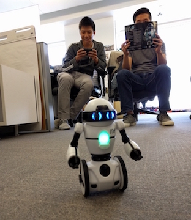

Based at the Viant, inc. headquarters in Irvine, California, we here at the Viant Data Engineering Team spend our time flying imaginary TIE Fighters, being Chinese tea aficionados, dodging nerf bullets (and sometimes nerf guns?!...), going to Sam Woo a lot, and writing really long sentences.
But sometimes, we do actual work. Building incredibely scalable distributed systems, gathering and analyzing huge data sets with over 1.2 billion records, and developing amazing products for clients is just a sample of what we do. We work in an Agile environment that moves fast, but expect nothing less than top notch quality on all of our code, designs, and products. As a data marketing company, we also deal with loads of private and personal data and value honesty and integrity just as much as a brilliant engineering mind.
If you're interested in joining our team, check out our Careers Page.
We might not have many values, but we sure do have a lot of key-values!